0


[0 1 2 3]
[0 1 2 3]
1


[0 1 3 2]
[0 1 3 2]
2


[0 2 1 3]
[0 2 1 3]
3


[0 2 3 1]
[0 2 3 1]
4


[0 3 1 2]
[0 3 1 2]
5


[0 3 2 1]
[0 3 2 1]
6


[1 0 2 3]
[1 0 2 3]
7


[1 0 3 2]
[1 0 3 2]
8


[1 2 0 3]
[1 2 0 3]
9


[1 2 3 0]
[1 2 3 0]
10


[1 3 0 2]
[1 3 0 2]
11


[1 3 2 0]
[1 3 2 0]
12


[2 0 1 3]
[2 0 1 3]
13


[2 0 3 1]
[2 0 3 1]
14


[2 1 0 3]
[2 1 0 3]
15


[2 1 3 0]
[2 1 3 0]
16


[2 3 0 1]
[2 3 0 1]
17


[2 3 1 0]
[2 3 1 0]
18


[3 0 1 2]
[3 0 1 2]
19


[3 0 2 1]
[3 0 2 1]
20


[3 1 0 2]
[3 1 0 2]
21


[3 1 2 0]
[3 1 2 0]
22


[3 2 0 1]
[3 2 0 1]
23


[3 2 1 0]
[3 2 1 0]


 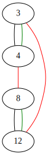
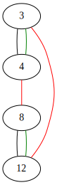


 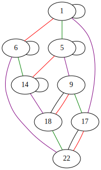
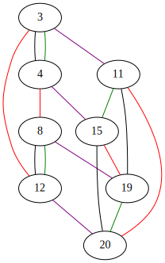
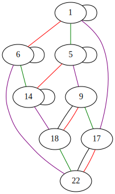
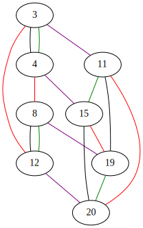
 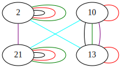
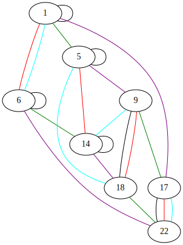
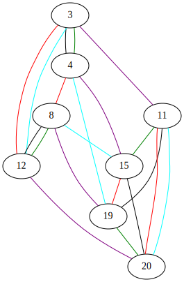
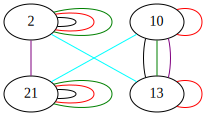
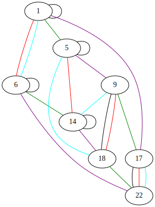
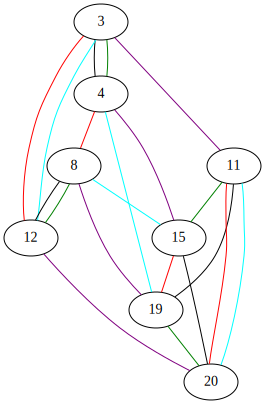
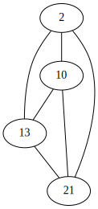
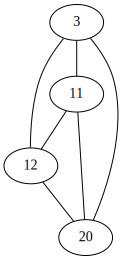
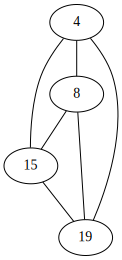